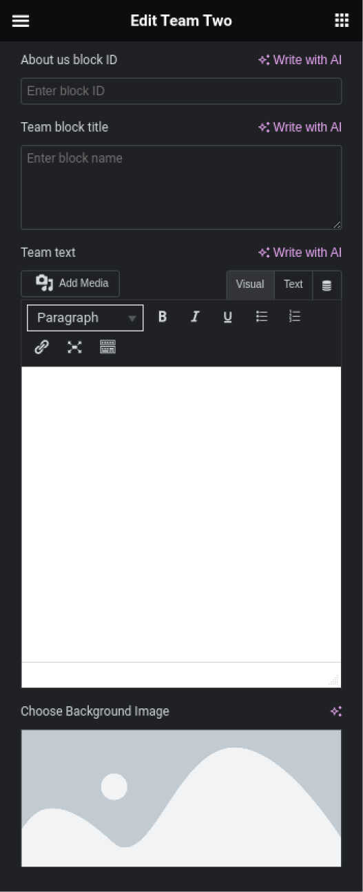

Вступ
Дякую вам за покупку шаблону Yuna. Цей документ складається з декількох частин і продемонструє вам весь процес створення з нуля і адміністрування сторінок. Я зробив все можливе, щоб ця інструкція була якомога зрозумілішою і простою у використанні.
Що таке шаблон Yuna?
Шаблон Yuna - це рішення для створення сторінок для рекламування надання тих чи інших послуг. Ви отримаєте готове рішення, зручне та просте в використанні. Набір опцій що дозволить швидко, легко налаштувати шаблон під себе. В ньому зібраний досвід розробки успішного просування послуг.
Складові частини
- Тека з темою, відповідає за стилі та функціональність елементів
- Плагін ядра, в якому реалізовано всі опції та варіативність шаблону
- Набір плагінів на базі яких створені налаштування та безпосередньо блоки з яких складається шаблон
Шаблон встановлюється вже на готову для роботи копію WordPress та не потребує додаткових її налаштувань
Встановлення та налаштування
Шаблон встановлюється вже на готову для роботи копію WordPress та не потребує додаткових її налаштувань бази даних та самої системи
- Завантажуємо акхів з темою який ви отримаєте
- Завантажуємо архів з кореневим плагіном
-
Встановлюємо всі плагіни які запропонує корневий плагін, або встановлюєте їх самостійно. Перелік плагінів:
- Elementor перейти на сторінку плагіну. Плагін є обовʼязковим для встановлення.
- Carbon Fields завантажити останню версію. Плагін є обовʼязковим для встановлення.
- SVG Support перейти на сторінку плагіну. Плагін є обовʼязковим для встановлення.
- Yoast SEO перейти на сторінку плагіну. Плагін є не обовʼязковим, але бажаним для налаштування SEO на вашому сайті
-
Після встановлення теми та всіх плагінів ви отримаєте насиупний зовнішній вигляд панелі адміністратора
Ви побачите наступні додаткові пункти меню:
- Our team - таксономія де ви можете додати членів вашої команди. Дані які можна ввести це фото, імʼя, посада
- Our services - таксономія з переліком послуг які ви надаєте. Кожна послуга може бути окремою сторінкою якщо є контент для того щоб її розкрити більш детально. Мінімальний контент це назва сервісу, зображення сервісу, короткий опис сервісу.
- Our gallery - таксономія в якій можна додати зображення компанії, процесу роботи, тощо. Складається виключно з зображень
- Reviews - таксономія з відгуками клієнтів про вашу роботу. Має структуру - імʼя, аватар, текст відгуку, додатковий параметр (не обовʼязковий)
- Our cases - таксономія з прикладами роботи, цікавими ситуаціями, чи статтями які допоможуть вашім клієнтам. Передбачає що стаття має прівʼю з назви, зображення та короткого тексту, та самої статті
- FAQ - таксономія з часто задаваними питаннями, має формат питання/відповідь
- Elementor та Template - налаштування плагіну Elementor. Можна залишити за замоченням чи налаштувати де які опції
- Site Options - сторінка налаштувань теми. Де ви налаштуєте як частину зовнішнього вигляду, так і функціональність. Детальний опис буде далі
Опис пункту Site Options
- Сторінка налаштувань має три вкладки. Contacts, Site options, Contact form options
- Вкладка Contacts складається з:
- Phone Number - вашого контактного номеру телефону
- Site E-mail - електронної пошти вашого сайту
- Linkedin link, Facebook link, Instagram link, YouTube link, Twitter link - переліку посилань на ваші соціальні мережі. Вони не обовʼязкові всі для заповнення, додайте посилання на ті які в вас є чи які ви хочете вивести
- Telegram bot link - посилання на телеграм бота якщо він в вас є чи ви його плануєте
- You address - фізична адреса вашого офісу
- Start of work on weekdays, Stop of work on weekdays - графік роботи в будні дні
- Start work on saturday, Stop work on saturday - графік роботи в суботу, якщо працюєтє
- Start work on sunday, Stop work on sunday - графік роботи в неділю, якщо працюєте
- Вкладка Site options складається з:
- Site Header Logo, Site Footer Logo - Поля для завантаження вашого логотипу. Окремо завантажується для шапки та підвалу сайту. В ідеалі це має бути зображення у ворматі svg. Можна також завантажити png. Формат jpg для логотипу не рекомендується. Логотип масштабується за висотою пропорційно, висота буде складати 50рх для шапки та 70рх для підвалу
- Background image in the header of internal pages by default - якщо у вас будуть внутрішні сторінки та ви не хочете для всіх робити фонове зображення першого екрану, то це зображення буду підставлятись там де ви його не задасте. Завширшки зображення має бути н меншим ніж 1920рх заввишки не менш ніж 700рх
- Accent color - акцентний колір який ви будете використовувати на вашому сайті. Застосоється явтоматично для стандартних елементів які ви не редагуєте для виділення та ідентичної стилістики всіх елементів
- Header background color, Footer background color - фоновий колір шапки та підвалу
- Button scroll top background color - фоновий олік кнопки яка скролить до гори сайту, колір стрілки в ній буде кольором з поля Accent color
- Footer text color, Header text color - колір тексту у підвалі та шапці сайту
- Add Google Tag Manager? - якщо ви не хочете лізти у код теми і встановлювати код Google Tag Manager вручну, ви можете встановити його через цю опцію.
- Add Facebook Pixel Code? - якщо ви не хочете лізти у код теми і встановлювати код Facebook Pixel вручну, чи не працюєте з Google Tag Manager, ви можете встановити його через цю опцію.
- Add Multi Language? - виводить перемикач мов у шапці сайту
- Вкладка Contact form options складається з:
- Add field "Name"?, Add field "Email"?, Add field "Phone"?, Add field "Message"? - перелік полів які ви хочите бачити у своїй формі зворотнього звʼязку
- Add phone mask? - якщо ви використовуєте поле з телефоном, то можете обрати яку телефонну маску будете використовувати якщо оберете цю опцію.
- What type of phone mask do you need? - тут обераєте саме тип маски. Це "International with auto-substitution by IP" - яка використовує плагін з міжнародною телефонною маскою яка за IP адресою користувача підставляє маску для введення номеру. "Custom according to the specified template" - це плагін який використовує шаблон номеру який ви задасте вручну у зʼявившомуся полі
- Send mail to your gmail address? - якщо ви хочете отримувати повідомлення на пошту, то оберіть опцію та у полі "Your gmail address" введіть адресу на яку має надходити пошта.
- Send messages in Telegram? - якщо ви хочете отримувати повідомлення в Telegram оберіть цю опцію. Потім у Telegram створіть свого бота та у поле "Your telegram bot API key" додайте його API key. Далі створіть чат у Telegram, додайте туди вашого створеного бота, а у поле "Your chat ID to which your bot is added" додайте ID цого чату.
- Ви можете використовувати інтегріцію з поштою та Telegram одночасно
- Site letter subject - вкажіть як будуть називатися отримувані вами повідомлення з сайту
- Thank you text for the submitted form in a pop-up window - введіть текст який буде у спливаючому вікні після відправки форми
Після того як ви вносите зміни до налаштувань, перед переходом у нову вкладку, збережіть зміни
Опис пункту FAQ
- Переходимо в меню FAQ
- Створюємо нову картку запинання/відповіді
- У поле 1 додаємо текст питання, у поле 2 додаємо текст відповіді, натиснувши кнопку 3 - зберегти картку
Опис пункту Our Cases
- Переходимо в меню Our Cases
- Створюємо новий кейс
- у поле 1 додаємо назву кейсу, у поле 2 короткий опис для прівʼю, у поле 3 головно зображення кейсу для правю та на перший екран сторінки цього кейсу, у полі 4 обираємо шаблон в який виводиться сторінка кейсу, натиснувши на кнопку 5 - переходимо до створення сторінки кейсу, натиснувши на кнопку 6 - зберігаємо кейс.
- Розбір блоків з яких складаються сторінки буде далі у окремому розділі
Опис пункту Reviews
- Переходимо в меню Our Cases
- Створюємо новий відгук
- У полі 1 вводимо імʼя того хто залишив відгук, у полі 2 текст відгуку, к полі 3 вводимо додаткову характеристику якщо є, у полі 4 додаємо аватар людини залишившої відгук, аватар має бути співвідношення сторін 1:1 квадрат, натискаємо кнопку 6 для публікації відгуку
Опис пункту Our Gallery
- Переходимо в меню Our Gallery
- Додаємо нове зображення до галереї
- У полі 1 вводимо назву зображення, у полі 2 додаємо зображення, публікуємо зображення натискаючи кнопку 3
Опис пункту Our Service
- Переходимо в меню Our Service
- Додаємо новий сервіс
- У полі 1 додаємо назву сервісу, у полі 2 короткий опис сервісу, у поле 3 зображення для прівʼю та зображення на головний екран якщо буде окрема сторінка, натискаючи на кнопку 4 створюємо сторінку сервісу, У поле 5 вводимо назву кнопки для переходу з прівʼю сервісу на сторінку сервісу, у полі 6 обираємо шаблон для сторінки сервісу, наискаємо кнопку 7 для публікації сервісу
- Розбір блоків з яких складаються сторінки буде далі у окремому розділі
Опис пункту Our Team
- Переходимо в меню Our Team
- Додаємо нового члена команди
- У полі 1 вводимо імʼя співробітника, у поле 2 посаду працівника, у поле 3 фото працівника, натискаєм на кнопку 5 для публікації нового працівника
Створення сторінки
- Перейдіть у меню Pages
- Додаємо нову сторінку
- У полі 1 вводимо назву сторінки, у полі 2 обераємо шаблон сторінки "Template Full", натискаючи на кнопку 3 переходимо до створення сторінки, натискаючи на кнопку 4 зберігаємо і публікуємо сторінку
Опис блоків для створення сторінок
- Всі блоки які йдуть з корневим плагіном теми знаходяться у категорії елеметнів плагіну Elemrnter "Yuna Category"
- Для створення блоку, перятягуємо потрібний віджет на екран. Потім треба зробити для кожного віджету наступні налаштування У полі 1 "Content Width" обиріть опцію "Full Width" для того щоб віджет займав всю ширину екрану, у полі 2 "Columns Gap" обираємо опцію "No Gap" для того щоб у віджеті не було стандартних внутрішніх відступів.
- Це все, інші налаштування блоку залишаємо без змін
- Кожен віджет з категорії "Yuna Category" складається з деяких опцій та полів загальних для всіх.
- У вкладці "Content" загальним для всіх блоків, е поле "...block ID". Це поле не обовʼязкоае, в ного додається ідентефікатор блоку, за яким можна зробити якірне меню навігації по сторінці з анімацією прокрутки до блоку
- У вкладці "Style" можна обрати кольори для елементів блоку, у кожному блоку їх кількість різна, в залежності від йього структури. Та аони дозволяють мати максимально гнучкість у стилистиці, щоб вона відповідала вашим уподобанням
- Блок "Main Screen One"
Вкладка "Content" складається з наступних полів:
- Поле "Choose Background Image" для вибору фонового зображення екрану
- Поля "Main title", "Main subtitle", "Main text" - це нвзва сайту, його слоган чи основна думка та текст призиву до дій, наприклад натискання копки зворотнього звʼязку.
- Поле "Button text" - це текст у кнопці яка виде до спливаючого вікна з формою зворотнього звʼязку
- "Button background color" - колір кнопки
- "A semi-transparent color over the background image" - відрегулюйте колір та його прозорість поверх зображення для більшої читаємості тексту
- "Text color" - колір тексту на головному екрані
- "Button text color" - колір тексту у кнопці
- Блок "Advantages One"
Вкладка "Content" складається з наступних полів:
- "List" - це повторювач, де можна додати безліч преваг, мінімум 1 до безкінечності. В залежності від кількості переваг вони тають слайдером.
- "Icon" - тематична іконка переваги. Краще за все додавати у форматі svg
- "Advantages name" - назва переваги
- "Advantage item background color" - Фоновий колір картки з перевагою
- "Advantages background color" - Фоновий колік блоку
- "Text color" - колір назви переваги
- "Svg icon color" - можна обрати колір іконки якщо вона у форматі svg. Колір змінеться тільки на опублікованій сторінці, в режимі конструктора не змінюється
- Блок "About Us One"
Вкладка "Content" складається з наступних полів:
- "About us block title" - Заголовок блоку. Регістр літер так як вводиться в полі
- "Choose first image", "Choose second image", "Choose the third image" - Театичні зображення, бажано вертикальні та формату jpg
- "About us description" - текст блоку. Має вигляж редактору, тому можуть бути як параграфи та і заголовки чи перліки
- "About block background color" - колір фону блоку
- "Before image background color" - напівпрозорий колір поверх зображень
- "Title text color" - колір заголовку блоку
- "Title text color" - колір ткусту блоку
- Блок "How We Work"
Вкладка "Content" складається з наступних полів:
- "Choose Background Image" - оберіть фонове зображення блоку
- "How we work block title" - введіть заголовок блоку
- "List" - картка кроку. Кроки мають назву, іконку, так ороткий опис. Кількість не обмежена. Виводяться у вигляді плитки по 3 картки в ряд
- "Icon" - тематична іконка кроку, може бути як іконки з вбудованого іконочного шрифту, або svg ісонки
- "Step name" - текст назви кроку
- "Description" - текст короткого опису кроку
- "Accent color" - ацентний колік сайту, для виділення елементів блоку
- "Step item background color" - фоновий колір картки кроку
- "Before background color" - напівпрозорий колір поверх фонового зображення блоку
- "Block title color" - Колір заголовку блоку
- "Step name text color" - колір тексту назви кроку
- "Step description text color" - колір тексту ророткого опису кроку
- Блок "Our Services"
Вкладка "Content" складається з наступних полів:
- "Services block title" - заголовок блоу
- "Block text" - текст опису блоку
- Сам контент виводиться з категорії "Our Services"
- "Cases block background color" - фоновий колір блоку
- "Button background color" - колір кнопки, якщо є перехід на сторінку сервісу
- "Accent color" - колір навігації
- "Service cart title background color" - фоновий колір назви сервісу
- "Service cart hover background color" - напівпрозорий фоновий колір картки при наведенні
- "Block title color" - колір заголовку блоку
- "Block text color" - колір тексту блоку
- "The color of the service name in the preview" - колір назви сервісу
- "The color of the service name when hovering" - колір назви сервісу при наведенні
- "The color of the brief description of the service when hovering" - колір короткого опису сервісу при наведенні
- "Button text colo" - колір тексту у кнопці, якщо є перехід на сторінку сервісу
- Блок "Team"
Вкладка "Content" складається з наступних полів:

- "Team block title" - заголовок блоку
- "Team text" - текст для дитального опису команди
- "Choose Background Image" - фонове зображення блоку
- "Accent color" - голоаний колір сайту який буде використовуватись для виділення навігації по блоку
- "Text block background color" - фоновий колір під текстом детального опису команди
- "Team men card background color" - фоновий колір картки співробітника
- "Before background color" - напів прозорий колір поверх зображення блоку
- "Block title color" - колір заголовку блоку
- "Text about color" - колір детального тексут
- "Team men name color" - колір імені співробітника
- "Team men position color" - коліт тексту посади співробітника
- Блок "Reviews"
Вкладка "Content" складається з наступних полів:
- "Reviews block title" - заголоаок блоку
- Весь контент блоку виводиться з категорії "Reviews"
- "Accent color" - коляр для навігації на картки з відгуком
- "Reviews block background color" - фоновий колір блоку
- "Block title color" - колір заголовку блоку
- "Review text color" - колфр тексту відгуку
- "Review name, text color" - колір імені людини залишившої відгук
- "Review additional characteristic text colo" - колір додаткової інформації про відгук
- "Quotes color" - колір декору
- "Separator color" - колір смуги розділювача
- Блок "Контакти"
Вкладка "Content" складається з наступних полів:
- "Choose Background Image" - фонрве зображення блоку
- "Contact form block title" - текст заголовок блоку
- "Call to form submit text" - текст призиву залишити заявку
- "Form field name placeholder" - текст плейсхолдеру поля іменя у формі
- "Form field e-mail placeholder" - текст плейсхолдеру поля пошти у формі
- "Form field phone placeholder" - текст плейсхолдеру поля телефону у формі
- "Form field massage placeholder" - текст плейсхолдеру поля повідомлення у формі
- "Form button submit text" - текст кнопки відправки форми
- "Header with work schedule" - текст назви розкладу роботи
- "Field signature with schedule from Monday to Friday" - позначення розкладу роботи у будні дні
- "Field signature with schedule from saturday" - позначення розкладу роботи у суботу
- "Field signature with schedule from sunday" - позначення розкладу роботи у неділю
- соціальні мережі, графік роботи та ваші контактні дані виводяться в залежності від того що ви вказали у опціях сайту
- "Accent color" - колір для виділення елеменів
- "Contact card background color" - фоновий колір для картки з розкладом роботи
- "Form input background color" - фоновий колір для полів воду у формі
- "Before background color" - напівпрозорий колір поверх фонового зображення блоку
- "Block title color" - колір заголовку блоку
- "Contacts info text color" - колір тексту у блоку з розкладом
- "Form title color" - колір тексту призиву залишити заявку
- "Form button text color" - колір тексту у кнопці відправки форми
- "Placeholder color" - колір тексту плейсхолдерів у формі
- "Input focus border color" - колір поля імпут коли воно у фокусі
- Блок "F.A.Q"
Вкладка "Content" складається з наступних полів:

- "FAQ block title" - заголовок блоку
- контент виводиться з таксономії "FAQ"
- "Background color" - фоновий колір питання
- "F.A.Q. block background color" - фоновий колір блоку
- "Answer background color" - фоновий колір відповіді
- "Block title color" - колір заголовку блоку
- "Question text color" - колір тексту запитання
- "Question arrow color" - колір стрілки індекатору активного питання
- "Answer text color" - колір тексту відповіді
- Блок для контенту сторінки послуги
Вкладка "Content" складається з наступних полів:
- "Content block name" - головний заголовок блоку
- "Content text" - контент блоку. Можна додавати заголовки різного рівня, переліки, зображення, виділяти текст, тощо. Повний функціонал Текстового редактору
- "Background color" - Фоновий колір блоку
- "Block title color" - колір основного заголовку блоку
- "Contacts info text color" - колір основного тексту
- Блок "Result"
Вкладка "Content" складається з наступних полів:
- "Block title" - текст заголовку блоку
- "Slider" - автоматичний слайдер з зображеннями, можна додати будьяку кількість
- "List" - перелік результатів, може мати будь яку кількість. Кожен клкмент складається з поля "Icon" - тематичного зображення у форматі svg фбо іконка з іконочного шрифта, поля "Result text" - назва роезультату
- "Background color" - фоновий колір блоку
- "Block title color" - колір заголовку блоку
- "Result name text color" - колір тексту назви результату
- "Icon color" - колір тематичних іконок ркзультату

- Блок "Our Gallery"
Вкладка "Content" складається з наступних полів:
- "Gallery block title" - текст заголовку блоку
- "Button more text" - текст у кнопкці яка завантажує бфльше зображень
- Кнопка без заповненого поля посилання не виводиться
- Контент виводиться з таксономії "Our Gallery". За замовченням виводиться 8 останніх зображень. Якщо зображень більше 8 з'являється кнопка для відображення всіх зображень
- "Background color" - фоновий колір блоку
- "Button background color" - колір кнопки
- "Block title color" - колір заголовку блоку
- "Button text color" - колір тексту у кнопці